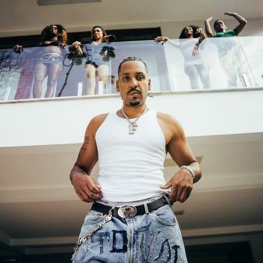

Nascido em Sobradinho, Brasília, começou sua carreira musical no rap underground. Com letras profundas e críticas sociais, rapidamente ganhou reconhecimento na cena do rap nacional.
O sucesso veio com o grupo Um Barril de Rap, e mais tarde, em sua carreira solo, ele lançou álbuns como "O Pior Disco do Ano", que consolidou seu nome no rap brasileiro. Froid também se destaca pela produção de videoclipes marcantes, que complementam suas músicas com narrativas visuais poderosas.
